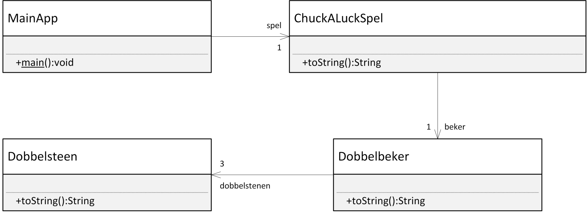

Les 7 - Voorbereiding (V7)
Theorie
Screencast onderwerp 4.2 -- 4.4 van Processing naar Java
Onderwerp 4.2
https://www.youtube.com/watch?v=Ub-0Pa5B1Lw&list=PLpd9jJvk1PjnMmrtlNeOzviLhJolx0_oi&index=2
Onderwerp 4.3
https://www.youtube.com/watch?v=guHGz_a1Z0w&list=PLpd9jJvk1PjnMmrtlNeOzviLhJolx0_oi&index=3
Onderwerp 4.4
https://www.youtube.com/watch?v=XQltRh1ba0g&list=PLpd9jJvk1PjnMmrtlNeOzviLhJolx0_oi&index=4
Boek
Hoofdstuk 2
2.8 (pagina 68 t/m 70)
Hoofdstuk 6
6.12 (pagina 239 t/m 242)
Processing library importeren in IntelliJ / Eclipse
Om de Processing klassen te kunnen gebruiken in IntelliJ of Eclipse, zul je deze eerst moeten importeren. Hoe je dit kan doen staat in het document Gebruik van Processing in Eclipse en IntelliJ.docx, te vinden op Onderwijs Online.
Opgave V7.1 - Klok in Eclipse
V7.1 A
Zet alle klassen uit de KlokApp in Processing om naar Javacode in IntelliJ / Eclipse.
(De Processing code staat op Onderwijs Online, zie Les 5: KlokApp.zip)
V7.1 B
Zorg ervoor dat de klasse Klok geen instantievariabelen x, y, hoogte en breedte meer heeft. Maak in Klok wel getters en setters voor x, y, hoogte en breedte en zorg ervoor dat in die getters en setters de urenTeller en minutenTeller gebruikt worden om de juiste waarde terug te geven en aan te passen.
Opdracht V7.2 - Klassediagram Chuck-a-luck
Spelbechrijving
Beschouw de volgende eenvoudige versie van het spel Chuck-a-luck: Per ronde zet je een bedrag in op een geluksgetal van 1 tot 6 en vervolgens gooi je drie dobbelstenen met behulp van een dobbelbeker. Als geen van de dobbelstenen dit geluksgetal aangeeft, dan ben je je inzet kwijt. In alle andere gevallen wordt uitbetaald afhankelijk van het aantal dobbelstenen dat het voorspelde aantal ogen weergeeft:
| Overeenkomende dobbelstenen | Uitbetaling |
|---|---|
| 1 (een Single) | 1:1 |
| 2 (een Double) | 2:1 |
| 3 (een Triple) | 10:1 |
Technische specificatie
Klassen
De hele applicatie bestaat uit vier klassen: Dobbelsteen, Dobbelbeker en ChuckALuckSpel en MainApp. Zie onderstaande klassendiagram (meeste methoden en instantievariabelen zijn weggelaten).

MainApp
De MainApp fungeert als een test voor de andere drie klassen. Hieronder is een mogelijke implementatie gegeven van de MainApp.
public class MainApp {
public static void main(String[] args) {
ChuckALuckSpel spel = new ChuckALuckSpel(100);
spel.speelRonde(3, 5);
System.out.println(spel);
spel.speelRonde(3, 20);
System.out.println(spel);
spel.speelRonde(4, 10);
System.out.println(spel);
}
}
Deze code levert onderstaande uitvoer in de console:
Ronde: 1
geluksgetal: 3
worp: 1 6 1
saldo: 95
---------------
Ronde: 2
geluksgetal: 3
worp: 2 6 5
saldo: 75
---------------
Ronde: 3
geluksgetal: 4
worp: 5 3 4
saldo: 85
---------------
Opgave
Maak het klassendiagram af door in de drie klassen: ChuckALuckSpel, Dobbelbeker en Dobbelsteen alle ontbrekende instantievariabelen en methoden toe te voegen zodat ChuckALuck gespeeld kan worden op basis van bovenstaande beschrijving.
Probeer geen getters en setters te declareren tenzij je denkt dat je echt niet zonder kan in deze situatie.
Hint
Je hoeft nog geen code te schrijven, dat doen we in de les.